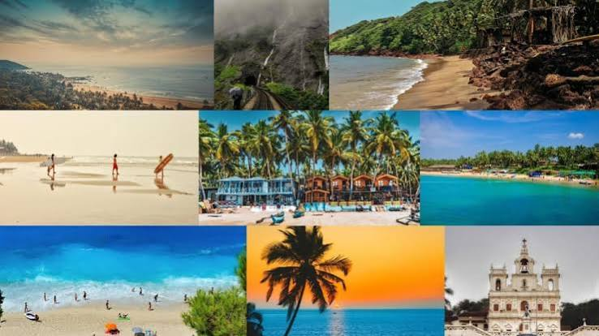
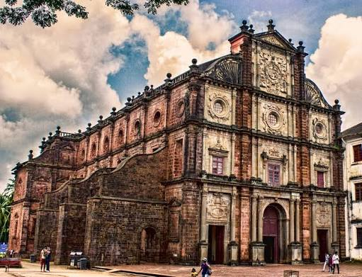
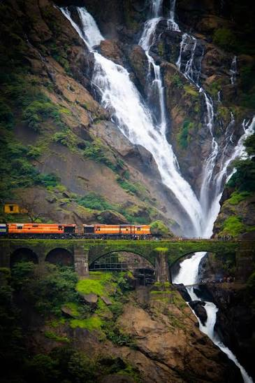
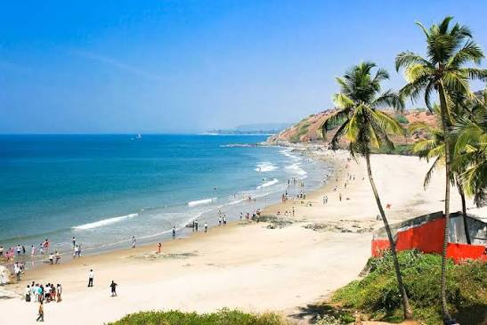
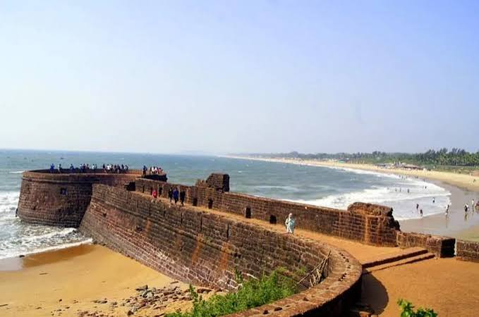

The Beach Capital of India • Coastal Jewel & Susegad Paradise
Ah, Goa! The very name conjures up images of sun-kissed beaches, swaying palm trees, and a laid-back vibe (*susegad*) that is as contagious as a beachside melody. As India's beach capital, Goa unfolds as a mesmerizing coastal paradise.
Distinguished by its rich Portuguese heritage, stunning whitewashed churches, vibrant Latin quarters like Fontainhas, and world-class seafood, Goa offers an unbeatable blend of relaxation, adventure, and culture.
From exploring UNESCO World Heritage monuments like the [Basilica of Bom Jesus](https://www.incredibleindia.gov.in/en/goa) to witnessing the magnificent [Dudhsagar Falls](https://www.incredibleindia.gov.in/en/goa) (the "sea of milk"), Goa is a destination that captures every traveler's heart.

A renowned UNESCO World Heritage Site holding the mortal remains of St. Francis Xavier, showcasing immaculate baroque architecture.

A majestic four-tiered waterfall cascading down 310 meters amidst dense wildlife sanctuaries, often called the "sea of milk".

The vibrant heart of North Goa beaches, famous for water sports, beach shacks, vibrant nightlife, and golden sands.

A well-preserved 17th-century Portuguese fortress and lighthouse overlooking the confluence of the Mandovi River and Arabian Sea.
A unique cultural blend of Indian traditions and Portuguese colonial history, visible in the colorful heritage houses of Fontainhas, music, and folk dances like Fugdi.
A celebrated culinary tradition featuring Goan Fish Curry, Chicken Xacuti, Prawn Caldine, Bebinca, and local cashew-based *Feni*.
Celebrated with unmatched coastal zeal including the colorful **Goa Carnival**, Sunburn Festival, Shigmotsav, and Feast of St. Francis Xavier.